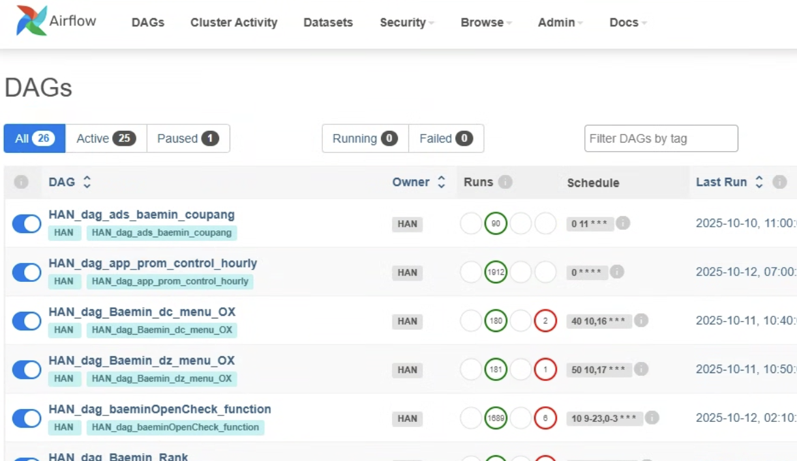
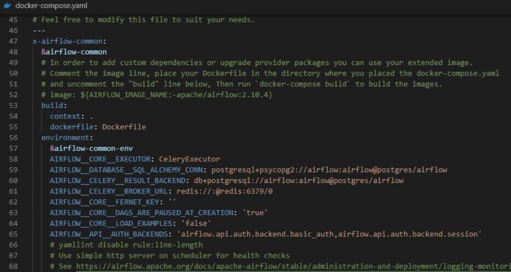
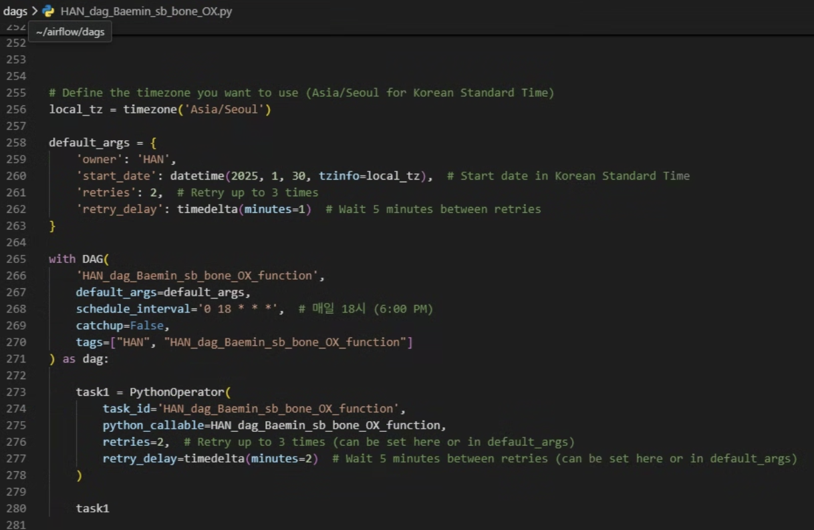

← 메인으로 돌아가기
Airflow를 더 단순하게
Workflow Automation & Team Enablement
복잡한 Airflow를 팀원들이 쉽게 사용할 수 있도록 단순화하고 표준화했습니다. 개발 지식이 없는 직원들도 DAG를 만들고 관리할 수 있는 시스템을 구축했습니다.
⚙️
워크플로우
👥
팀 교육
☁️
클라우드

문제 상황
모든 데이터 수집 및 자동화를 혼자 할 수 없어 팀원들에게 자동화 교육 필요
크론잡, 단순 스케줄링 등을 알려주기에는 체계가 부족하고 유지보수 불가능
팀원들은 데이터를 수집, 수정, 적재하는 간단한 ETL 설계 및 구축 능력은 보유
이 흐름을 관리할 수 있는 체계적인 툴이 필요
Airflow 도입 과정
각 데이터 관련 기업의 JD를 통해 Airflow에 대해 알게 됨
유료 강의를 통해 학습하고 유용성에 대해 인식
리눅스 기반 프로그램이라 VM, Docker 환경이 필요
Windows PC에서 WSL 운영 시 네트워크 충돌 문제로 안정성 부족
사내 다른 PC 운영 시 부재 시 유지보수 문제 발생 가능
GCP 기반 구축
최종적으로 GCP의 VM인 Compute Engine 사용 결정
8GB RAM, 4 Core 서버를 합리적인 가격대로 선정
회사 비용으로 처리되는 리소스에 대한 신중한 선택
설치 및 연결은 가능했지만 운영의 문제에 직면
핵심 도전과제
가장 큰 문제: 개발을 전혀 모르는 직원에게 어떻게 운영하게 할 것인가?
DAG를 만들게 하는 방법은?
유지보수가 가능하게 하는 방법은?
KubernetesExecutor는 매력적이지만 관리적 측면에서 어려움
CeleryExecutor를 선택하여 분산 병렬 처리 가능

단순화 전략
1. 태스크 오퍼레이터는 무조건 Python으로 단 한 개의 파일로만 컨트롤
2. 태스크 브랜치는 사용하지 않고 Python 코드 내 함수로 컨트롤
3. 내가 없어도 유지보수 가능해야 함
4. 모든 DAG는 간단하게 구조화하여 단순하게 작성 가능해야 함
다양한 오퍼레이터 대신 핵심 기능에 집중
복잡한 Async 사용하지 않고 특정 함수 내에서 병렬 처리

기술 스택
Apache Airflow
GCP Compute Engine
CeleryExecutor
Python
Docker
Linux
ETL
Workflow Management
Team Training
성과 및 결과
Key-Value 구조 기반 DAG 생성 시스템 구축
일반 사용자도 설정 가능한 구조로 팀원들이 DAG 생성 가능
Airflow 기본 UI를 통한 로그 확인 등 운영 기능을 직원들이 직접 활용 가능
개발 지식이 없는 직원들도 Airflow 운영 가능
표준화된 구조로 유지보수성 확보
팀원들의 자동화 역량 향상 및 업무 효율성 증대
분산 병렬 처리를 통한 성능 최적화
확장 가능하고 안정적인 워크플로우 관리 시스템 완성
×